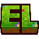

Home
Wiki
Community
About Us
Join Us!
Vote link 1
Vote link 2
Vote link 3
Vote link 4
Vote link 5
Vote link 6
Vote link 7
Vote link 8
Vote link 9
Vote link 10
Vote link 11
Vote link 12
Topvoter Competition Winners
1st
Md_Abu_Suhan
100 Votes
2nd
Player2
80 Votes
3rd
Player3
60 Votes